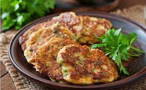

Mshat

Description
mshat is a palestinian fried food ,it's cheap and simple.
ingredients
- 1 cauliflower, boiled
- 3 eggs
- 1 bunch parsley, finely chopped
- 1 1/2 cups flour
- 1 onion, finely chopped
- 2 cloves garlic, crushed
- Salt, a pinch
- Cumin, a pinch
- Turmeric, a pinch
- Mixed spices, a pinch
- Vegetable oil, for frying as needed
Preparation Method
- Mash the boiled cauliflower until medium-coarse.
- Place the mashed cauliflower in a bowl with the chopped parsley,
chopped onion, garlic, cumin, salt, spices, flour, and eggs.
- Mix the ingredients well until combined.
- Shape the mixture into medium-thick patties.
- In a large pot of hot oil, fry the patties until cooked through and golden brown.
Home